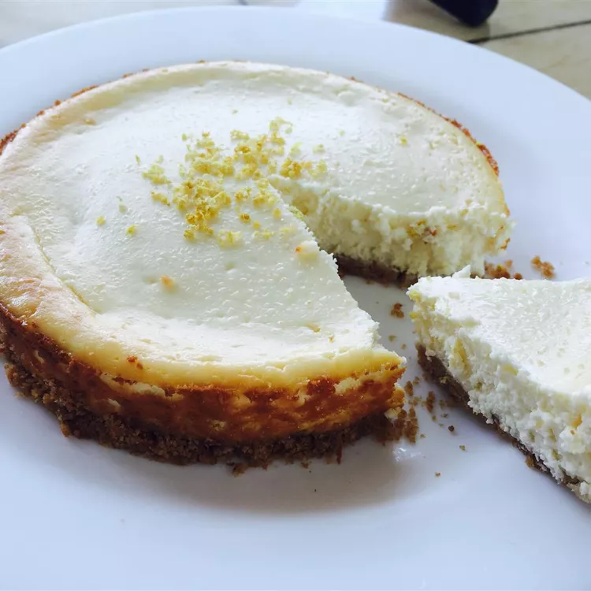

Lemon Cheesecake
Home

Description
This lemon cheesecake recipe is easy to throw together for a smooth and
creamy summer dessert. You can't even tell it is made with low-fat
ingredients.
Ingredients
- Reduced Fat Graham Cracker Pie Crust: 1 (9 inches)
- Cream cheese: 2 packages (8 ounces)
- White sugar: 1/2 cup
- All-purpose Flour: 1 1/2 tbsp
- Egg Substitute: 1/2 cup
- Lemon Juice: 2 1/2 tbsp
- Nonfat Lemon Yogurt: 1 container (8 ounces)
Steps
-
Preheat the oven to 350 degrees F (175 degrees C). Place pie crust
on a baking sheet.
-
Beat cream cheese and sugar in a large bowl with an electric mixer
until smooth; beat in flour, then egg substitute and lemon juice.
Stir in lemon yogurt until combined; pour mixture into crust.
-
Bake in the preheated oven until filling is set, about 50 to 60
minutes. Allow pie to cool, then refrigerate at least 4 hours before
serving.